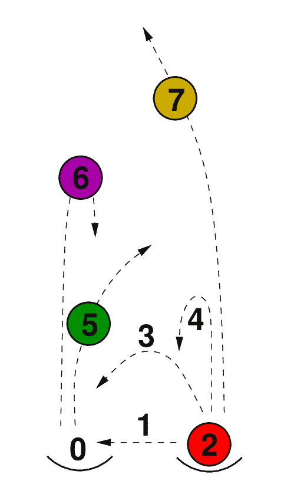
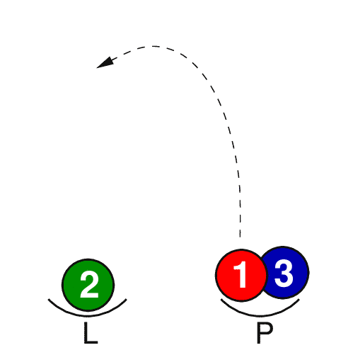
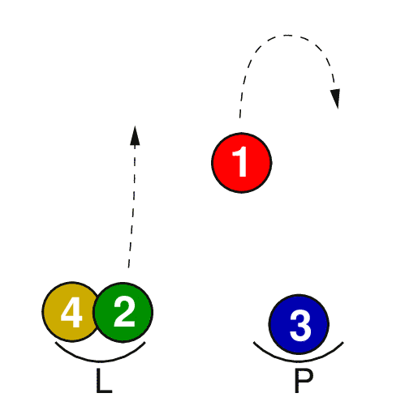
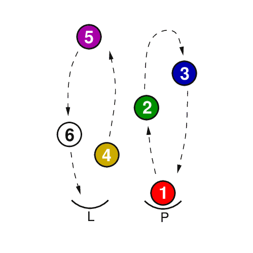
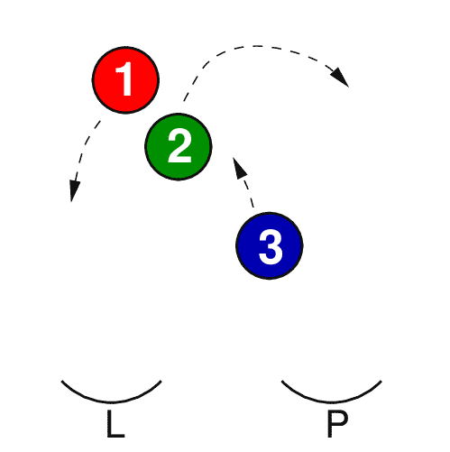
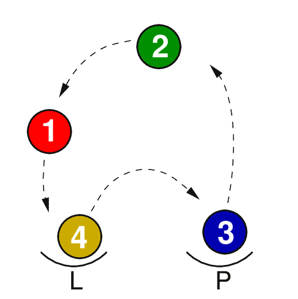

Jste zde: Žonglování » Informace o žonglování » Siteswap - popis žonglování pomocí čísel
 Zápis žonglování pomocí čísel. Jsou to vlastně takové noty pro žonglování. Siteswap vymysleli žongléři, aby s jejich pomocí našli nové triky.
0 znamená pauzu - v ruce nemáš míček. 1 značí hod rovně napříč a 2 je podobná 0, pauza. Rozdíl je v tom, že 0 je pauza bez míčku, 2 je pauza s míčkem, držení.
Nejjednodušší siteswap zapíšeme číslem 3. Začni pravou rukou a opakuj dokola.
P = pravá ruka L = levá ruka
P L P L P L P L P L P L ...
3 3 3 3 3 3 3 3 3 3 3 3 ...
 Pravá ruka hází míček stejně, jako když žongluješ se třemi míčky (docela nízko, z jedné ruky do druhé). Levou rukou hodíš stejný hod. Potom pravá, pak levá...
Trojka znamená kaskádu se 3 míčky.
Další jednoduchý příklad: fontána se čtyřmi míčky se zapíše jako 4.
P L P L P L P L P L P L ...
4 4 4 4 4 4 4 4 4 4 4 4 ...
 Čtyři míčky musíš háze jako asynchronní fontánu. V siteswap všechna sudá čísla zůstávají ve stejné ruce, lichá značí hody do druhé ruky.
 Všechny základní triky se zapisují jedním číslem (5 je kaskáda s pěti míčky, 8 je fontána s osmi míčky, atd.).
 Trik se třemi míčky. První tři hody jsou jako při kaskádě s pěti míčky. Pak následují dvě pauzy bez míčku (0).
P L P L P L P L P L P L ...
5 5 5 0 0 5 5 5 0 0 5 5 ...
Většina žonglérů zná tento trik pod názvem blesk.
 Trik se čtyřmi míčky. Z pravé ruky házíš 5, z levé 3.
P L P L P L P L P L P L ...
5 3 5 3 5 3 5 3 5 3 5 3 ...
Trik se jmenuje poloviční sprcha se čtyřmi míčky.
Sečteš všechna čísla v posloupnosti a vydělíš je délkou posloupnosti. 5+3=8 8/2=4, a tak jde o trik se čtyřmi míčky. Jestliže nevyjde celé číslo pak je siteswap špatný.
Vyhození dvou míčků najednou - synchronní hody se značí dvěma čísly v závorce. Současné vyhození dvou míčků rovně nahoru označíš jako:
[4,4]
Připojení písmene "x" za číslo znamená hod křížem.
[4,2x][2x,4]
Pokud je trik symetrický, může se zápis zkrátit a označit hvězdičkou
[4,2x]*